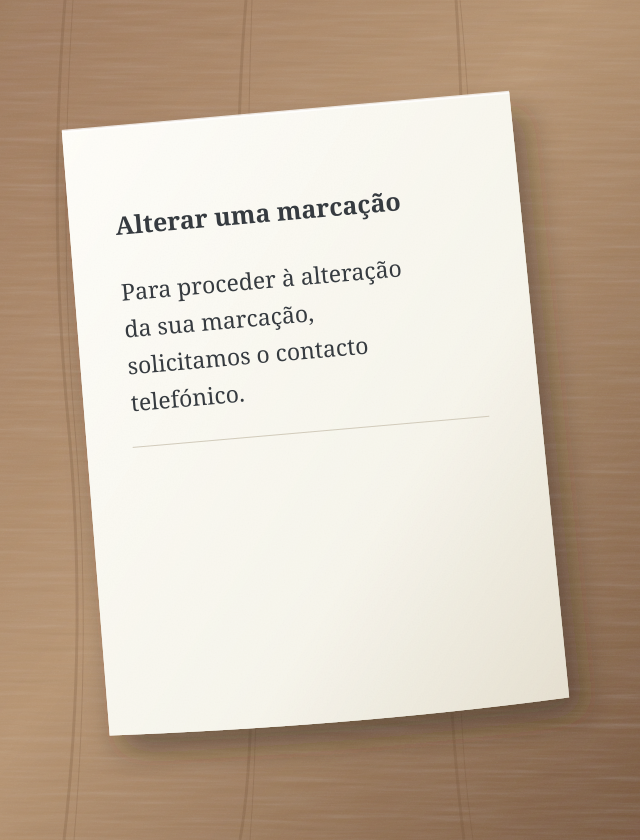
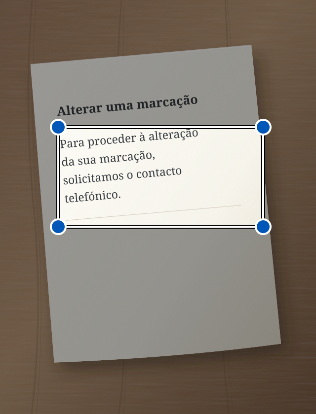

Uma carta oficial, uma mensagem longa, instruções complicadas. O Sedno ajuda a compreendê-las com palavras mais simples. Também pode corrigir o seu texto e lê-lo em voz alta.
Para proceder à alteração da sua marcação, solicitamos o contacto telefónico.
↳ Texto simplificado
Quer alterar a sua marcação? Telefone-nos.
Exemplo ilustrativo de simplificação.
Compreender melhor. Agir com mais facilidade.
A linguagem simples é para todos.
Criamos o Sedno sobretudo para pessoas com dificuldades auditivas e para quem tem dificuldade em compreender textos complexos. Palavras mais simples podem ajudar-nos a todos.
Das palavras ao sentido
Dois passos simples.
01
Adicione texto
Escreva, cole, tire uma fotografia ou fale.
02
Simplifique ou corrija
Escolha o que precisa. O resultado aparece no mesmo campo. Pode continuar a editá-lo.
i A IA pode cometer erros. Confirme as informações importantes no original.
Veja onde tocar
Sedno, passo a passo.
Cada exemplo mostra uma tarefa. O círculo indica onde tocar. A seta mostra o que acontece a seguir.
Estes são desenhos simplificados dos ecrãs. Os textos são exemplos. A aplicação pode ter um aspeto ligeiramente diferente.
Simplificar texto escrito
Uma mensagem difícil? Escreva-a ou cole-a no Sedno.
1 Escreva o texto e toque em «Simplificar».
Confirme que o modo Simplificar está escolhido.
Sedno – simplificar texto:
Para proceder à alteração da sua marcação, solicitamos o contacto telefónico.
Simplificar
2 Leia o texto mais simples.
O resultado aparece no mesmo campo. Pode editá-lo.
Texto simplificado
Quer alterar a sua marcação? Telefone-nos.
A IA pode enganar-se
Simplificar
Simplificar texto de uma fotografia
Uma carta em papel? Tire uma fotografia no Sedno.
1 Toque na câmara.
A câmara abre-se na aplicação.
Sedno – simplificar texto:
Escreve ou cola um texto
Simplificar
2 Toque em «Tirar fotografia».
Segure o telemóvel de forma a ver toda a página e o texto com nitidez.
Fotografar texto

Tirar fotografia
3 Selecione o texto e toque em «Simplificar».
Mova os cantos da moldura à volta do texto que quer simplificar.
Selecionar texto
Move os cantos da moldura para selecionar o texto.

Simplificar
4 Leia o texto mais simples.
O Sedno lê o texto da fotografia e simplifica-o.
Texto simplificado
Quer alterar a sua marcação? Telefone-nos.
A IA pode enganar-se
Simplificar
A fotografia fica no telemóvel. Só o texto reconhecido é enviado à IA. Se a simplificação falhar, o texto fica no campo para que o possa editar.
Simplificar a fala
Prefere falar em vez de escrever? Escolha o modo Simplificar.
1 Toque no microfone.
Se o telemóvel pedir acesso ao microfone, permita-o.
Sedno – simplificar texto:
Escreve ou cola um texto
Simplificar
2 Diga o texto em voz alta.
Fale no idioma escolhido. Faça uma breve pausa no fim.
Fale no idioma escolhido
O Sedno transforma a fala em texto.
3 Leia o texto mais simples.
Após 1,5 segundos de silêncio, o Sedno simplifica automaticamente o texto reconhecido.
Texto simplificado
Quer alterar a sua marcação? Telefone-nos.
A IA pode enganar-se
Simplificar
A fala é reconhecida no telemóvel. Precisa de Android 13 ou posterior, de um dispositivo compatível e de um modelo descarregado para o idioma escolhido. A gravação dura no máximo um minuto. Parar cancela a gravação.
Corrigir texto escrito
Quer corrigir a sua mensagem? Escolha o modo Corrigir antes de escrever.
1 Escreva o texto e toque em «Corrigir».
Mude de modo com as setas por cima do botão grande.
Sedno – corrigir texto:
amanha nao posso hir a reuniao
Corrigir
2 Leia o texto corrigido.
O Sedno corrige erros. Confirme que o texto diz o que pretende.
Texto corrigido
Amanhã não posso ir à reunião.
A IA pode enganar-se
Corrigir
Ouvir o texto corrigido
No modo Corrigir, o telemóvel pode ler em voz alta o texto do campo.
1 Toque no altifalante.
Primeiro corrija o texto. Depois toque no altifalante à esquerda.
Texto corrigido
Amanhã não posso ir à reunião.
A IA pode enganar-se
Corrigir
2 Ouça o texto.
O telemóvel lê em voz alta. O botão de parar interrompe a leitura.
O telemóvel lê em voz alta
Ouça o texto a partir do telemóvel.
A leitura funciona no telemóvel. Descarregue uma voz sem ligação à internet para o idioma escolhido nas definições do telemóvel.
Idioma
Escolha o seu idioma.
O Sedno suporta 13 variantes linguísticas. Na aplicação, abra o menu e escolha Idioma. A escolha também se aplica ao texto, ao ditado e à leitura. O Sedno simplifica e corrige; não traduz entre idiomas.
Os seus textos. O seu controlo.
Privacidade desde o início.
As fotografias e o som ficam no telemóvel. Só o texto é enviado à IA.
O texto das fotografias é reconhecido no dispositivo. A fotografia não é enviada.
O áudio fica consigo
O telemóvel reconhece a fala e lê o texto localmente. O Sedno não envia áudio ao seu servidor nem à OpenAI. Só envia o texto reconhecido para simplificação.
A IA processa o texto
O texto a simplificar ou corrigir passa pelo servidor para a OpenAI. O servidor Sedno não guarda o conteúdo.
Histórico durante 7 dias
O histórico encriptado fica apenas no seu dispositivo durante 7 dias. Pode apagá-lo antes. Terminar sessão apaga o histórico do telemóvel.
Sedno
Palavras mais próximas das pessoas.
A aplicação está em fase de testes. A ligação para descarregar aparecerá aqui após o lançamento.